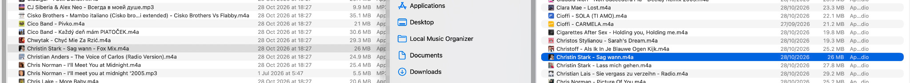

Same Recording, Different Names: What Audio Fingerprints Revealed
I thought I knew my own music library. Then I added audio fingerprint matching to Quality Duplicates and found nearly 100 duplicates that had been hiding in plain sight.
The idea came to me almost by accident. I stumbled across two tracks that sounded identical but had different names. It was the sort of discovery that makes you wonder how many more are lurking in a collection built up over decades. I decided to expand Quality Duplicates so it could search for matching audio, not just matching titles and metadata.
I expected to find a few forgotten copies. Instead, the new Audio Index led me into parts of my library I thought were already well organized.
The same song can have many names
Compilations have a talent for giving the same recording a different identity. Artist names can appear in a different order. An ordinary album track becomes a “Radio Edit” on a compilation. A “12 Inch” mix reappears somewhere else as an “Extended Version.” A song that was just another track on its original album becomes a “Bonus Track” on a reissue.
Then there are original releases and remasters, where a familiar title gains the suffix “Remastered.” Sometimes those labels describe genuine musical or mastering differences. Sometimes two differently labeled files turn out to contain essentially the same recording. The name alone cannot settle the question.
A few discoveries were stranger still: tracks with the wrong artist or an incorrect title altogether. No sensible title comparison would have connected them.
Example 1: Christin Stark in two different folders
One result summed up the problem nicely. In my Dance folder I had Christin Stark - Sag wann - Fox Mix.m4a. Elsewhere, in a Various folder, I had Christin Stark - Sag wann.m4a.
Quality Duplicates flagged the pair as having the same acoustic fingerprint. Yet their filenames, descriptions and folder locations were different. They had never looked like an obvious duplicate pair when I browsed the library by name.

Discovering the match was useful. But I also wanted to see both actual files, immediately, without copying long paths or searching through crowded folders. That is how the Find Both action became part of the feature.
One click opens two independent Finder windows side by side, selects the matching file in each, and scrolls it into view. It even works when the two recordings are buried in entirely different directories. You can instantly inspect their paths and filenames and decide what to compare next.

Example 2: Lossless versions I didn't know I owned
Another surprise was more important to me as a collector. Some recordings I had kept as MP3s also existed elsewhere in the library in lossless formats. I had been certain that a better-quality copy was unavailable to me. In fact, I already owned one; I simply hadn't recognized it under another title or compilation entry.
This wasn't always a straightforward file-for-file match. Different releases can contain different leading silences, sometimes just a short pause before the music starts. That can defeat naive comparisons based on exact file bytes or fixed positions. Fingerprints based on the audio content can reveal candidates worth investigating even when names and file structures differ.
It is important to be precise about what this means. An acoustic fingerprint match is a reason to compare recordings, not proof of identical mastering or superior sound quality. A lossless file also does not automatically sound better simply because it is lossless.
That's why I use A/B Compare after finding a promising pair. I can line up the playback positions, loop the same passage, switch instantly between the two files, temporarily match their loudness and look at the live spectra. None of that alters the originals. It helps me decide whether the versions are really interchangeable and which one I would rather keep.
Almost 100 duplicates I hadn't noticed
After going through the discoveries, I found around 100 genuinely duplicate recordings that I had overlooked. Some had misleading version labels. Others were on different compilations or attributed to the wrong artist. Some existed in both MP3 and lossless formats.
This turned out to be about much more than freeing disk space. I corrected mistakes in my collection, understood why certain tracks had been hiding from ordinary duplicate searches, and found better source files that I had forgotten I owned.
The last step has to remain deliberate. With Quality Duplicates I can remove a track from one Music.app playlist without touching the file, move an unwanted physical file to Trash, or explicitly choose to remove the file together with its verified Music.app library records. Finding a match never means the app should delete it automatically.
The fingerprint scan takes time. For me, it was worth it.
Computing audio fingerprints is more demanding than comparing filenames. A first scan of thousands of tracks — especially in multi-terabyte libraries — can take a long time. Local Music Organizer saves the Audio Index, so completed fingerprints can be reused instead of decoding unchanged recordings again and again.
My library still managed to surprise me after years of careful organization. I suspect people with several terabytes of music may discover some equally unexpected things about theirs.
What began as a small extension of Quality Duplicates has become one of the most revealing tools I've added to Local Music Organizer. I was looking for duplicates. I ended up rediscovering my own collection.